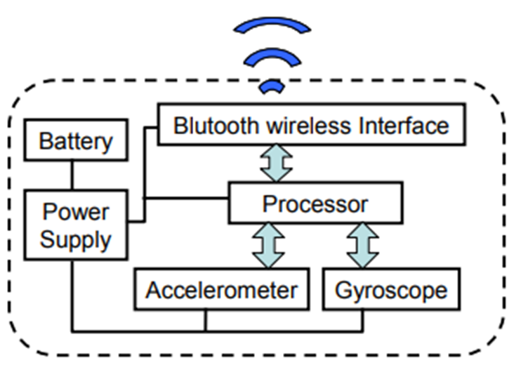
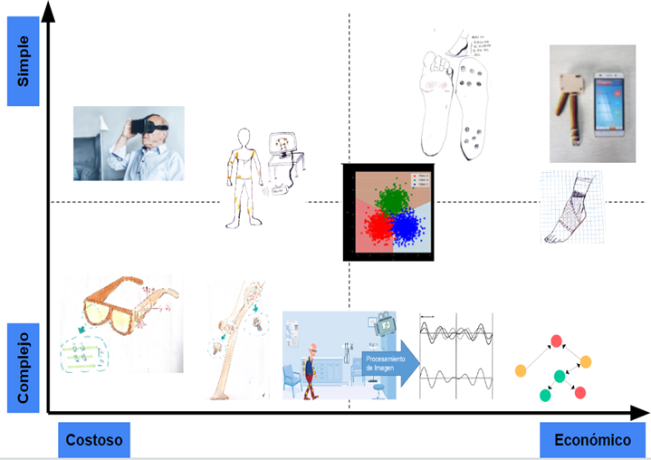

1. Estado del arte
1.1 Trabajos de investigación
1.1.1 Normas validadas para la clasificación en pacientes con EP:
MDS-UPDRS
La escala unificada de clasificación de la enfermedad de Parkinson de la sociedad internacional de desórdenes de movimiento (por sus siglas en inglés) toma en cuenta síntomas de la EP y sirve como medida de la severidad de la enfermedad. Esta es la norma validada [15] más utilizada de manera oficial en la enfermedad.
Hoehn y Yahr
Esta es una escala validada [16] y utilizada de la mano con la UPDRS para la determinación general del estado de gravedad de pacientes con EP.
NFoG-Q
El nuevo cuestionario del congelamiento de la marcha es un método ampliamente usado y validado [17] [18] para la clasificación del congelamiento y sus efectos en la vida diaria del paciente.
1.1.2 Monitoreo de la marcha en casa con ondas de radio[19]
Desarrollo de un dispositivo que puede detectar y analizar el movimiento del paciente mientras realiza sus actividades diarias, este emite ondas de radio que rebotan sobre el cuerpo del usuario. Se evaluaron 50 participantes por un año, de los cuales 34 tienen EP y 16 no. Se encontró una menor velocidad de marcha en promedio de pacientes con EP y que este parámetro es importante al momento de determinar la progresión de la enfermedad según el MDS-UPDRS (Escala unificada de clasificación de la enfermedad de Parkinson). Adicionalmente, el dispositivo permite monitorear las fluctuaciones generadas por la frecuencia de administración de medicamentos, ya que estos producen un efecto terapéutico que eleva la velocidad promedio de la marcha en los pacientes de EP.
1.1.3. Detectando el congelamiento de la marcha con un acelerómetro tri-axial en pacientes con EP [20]
Método para monitorear episodios de congelamiento de la marcha a partir de medidas de aceleración obtenidas de un dispositivo utilizado en la cintura. Los datos obtenidos del dispositivo se usan para la clasificación a partir del uso de un kernel SVM (máquina de vectores de apoyo) lineal, este es un algoritmo de aprendizaje neuronal para el cual se utilizaron las señales de 15 pacientes de entrenamiento y 5 otros pacientes para la evaluación. Para este dispositivo se logró una sensibilidad del 92.3%, así como una especificidad del 100% en un estudio realizado con 20 pacientes. Asimismo se obtuvo una precisión del 98.7%.
1.1.4. Identificación y clasificación automática de episodios de congelamiento de la marcha en pacientes con EP. [21]
Diseño de un sistema para la clasificación automática de patrones de la marcha. Se procesa la información obtenida de un sensor inercial compuesto por un giroscopio y acelerómetro en la pierna y se emplea un algoritmo que permite clasificar la marcha usando la correlación de Pearson, diferenciando cada paso por duración, desplazamiento y componentes espectrales. Puede diferenciar entre pasos normales, pasos cortos o muy cortos, y congelamiento de la marcha con temblores y con bloqueo motor total.
Para la examinación se le pide al paciente caminar en un camino complejo, creado para provocar los episodios de congelamiento. En un estudio de 12 pacientes con EP y congelamiento de la marcha lograron una sensibilidad del 100% y una especificidad del 99% en la determinación de congelamiento de la marcha con temblores y un 100%/100% en bloqueo motor total.
1.1.5. deFoG: un sistema en tiempo real para la detección y descongelación de la marcha de los pacientes con Parkinson [22]
Sistema portátil y discreto para el monitoreo de la marcha en tiempo real, que consiste en un sensor inercial y auriculares inalámbricos para la entrega de señales acústicas. El sistema reconoce los episodios de FoG con una latencia mínima y emite señales acústicas para descongelar la marcha. Llegaron a la conclusión de que la frecuencia de la marcha normal estaba cerca de los 2 Hz, mientras que las frecuencias de una marcha congelada oscilaban entre los 6 y 8 Hz. Recomendaron los tobillos como la ubicación ideal para colocar el sensor debido a la mejor salida de la señal. Asimismo, utilizaron acelerómetros triaxiales adheridos al tobillo específicamente para medir el movimiento de los vástagos. Después de monitorear a 11 personas, el método ha demostrado tener una precisión de un 78% en la detección de FoG antes de personalizarse para los usuarios individuales.
1.1.6. Congelación de la detección de la marcha: enfoque de aprendizaje profundo [23]
El sistema propuesto puede realizar un aprendizaje automático de características y distinguir entre eventos de congelación y marcha normal usando redes neuronales convolucionales (CNN) Los datos se recopilaron utilizando 5 sensores: 2 telémetros, dos acelerómetros y un goniómetro. La arquitectura propuesta discernió los eventos de congelación con la marcha normal con una precisión, especificidad y sensibilidad superior al 95%. Se construyó simulando diferentes comportamientos de marcha simultáneamente: simulando durante 10 s los pasos cortos de pacientes con EP, luego simulando FoG durante 5 s y, finalmente, otros 5 s de pasos cortos. Esta simulación se repitió 10 veces con una frecuencia de muestreo de 100 Hz. Los acelerómetros se fijaron en la espinilla y en el otro pie. Los telémetros en la parte inferior de la pierna sabiendo que la distancia entre las piernas se reduce en pacientes con EP.
1.1.7. Marcha, muñeca y sensores: detección de la congelación de la marcha en la enfermedad de Parkinson por el movimiento de la muñeca [24]
Se comparó el movimiento de muñeca durante la marcha, incluida la marcha en línea recta, los giros, el arranque y la parada. Se utilizaron unidades de medida de inercia, así como un acelerómetro, un giroscopio y un magnetómetro. El objetivo es encontrar patrones en los movimientos durante el episodio de FoG.
Los rendimientos de detección de FoG basados en los datos de la muñeca disminuyen ligeramente en términos de tasa de aciertos de FoG (0,9), la especificidad cae de 0,9 cuando se utiliza IMU de tobillo a 0,7 cuando se utilizan IMU de muñeca
1.2 Sistemas comerciales
1.2.1. STAT-ON™ [25]
Dispositivo médico de monitorización continua mediante datos objetivos de los síntomas motores de la enfermedad de Parkinson para entornos domésticos: Detecta distancias, representadas gráficamente. También, puede detectar episodios de congelamiento de marcha mayores a 1.6 segundos (resaltados dentro de la gráfica). Por último detecta 20 tipos de caídas mediante un algoritmo. Teniendo en cuenta que esta empresa española, no tiene distribución ni envíos a Perú.
1.2.2. StrivePD [26]
Es una aplicación de Apple Watch creada por Rune Labs, que está aprobada por la FDA. Esta aplicación puede detectar caídas y temblores; compilar datos sobre estos síntomas para compartirlo con los médicos y proporcionar continuamente contexto a los patrones de movimiento.
1.3 Patentes
1.3.1. FREEZING OF GAIT (FoG), DETECTION, PREDICTION AND/OR TREATMENT:
La presente invención trabaja mediante métodos y/o aparatos para detectar y/o tratar trastornos de la marcha, en particular, trastornos de la marcha episódicos, más particularmente, pero no exclusivamente, congelación de trastornos de la marcha, asociados con la enfermedad de Parkinson o no. Este método trabaja almacenando los datos sobre el movimiento del pie de un sujeto en el espacio tridimensional (3D) durante un período de tiempo definido. Dichos datos se adquieren con un sistema de medición electrónico adecuado para detectar movimientos de un pie en el espacio 3D, como los sistemas de análisis de la marcha basados en sensores. Se emplean sistemas de sensores que comprenden un acelerómetro 3D y/o un giroscopio 3D.
1.3.2. METHOD AND SYSTEM FOR ANALYZING HUMAN GAIT
La presente invención se refiere a un método para analizar la marcha de un sujeto, y así poder proporcionar datos que representan el movimiento en 3D de un pie de dicho sujeto a lo largo del tiempo; identificar dentro de dichos datos los primeros segmentos de al menos un paso; determinar una o más características del paso para cada uno de los primeros segmentos de datos; y definir uno o más grupos sobre la base de al menos una zancada. Cada uno de los grupos definidos representa una clase de zancadas (una clase puede representar el paso típico de un sujeto). La presente invención también proporciona sistemas que están configurados para realizar los métodos de la invención y el uso de estos sistemas para analizar en la evaluación de la marcha de un sujeto, preferiblemente un sujeto que sufre una discapacidad de movimiento.
1.3.3.METHOD FOR MONITORING FREEZING GAITS OF PARKINSON DISEASE PATIENT AND MONITORING EQUIPMENT
Se propone un método para mejorar la adquisición de datos relacionados con el seguimiento del congelamiento de la marcha en pacientes con Parkinson, realizado por equipos de monitoreo. La información recolectada será procesada y utilizada para enviar una señal de alerta al cuidador en el caso que detecte periodos de congelamiento anormales. Dicha señal será enviada por un dispositivo electrónico de comunicación. Dicho método consta de seguir los siguientes pasos:
- Recolectar información acerca del congelamiento de la marcha del paciente.
- Establecer una línea de control de alerta acorde de la información recolectada
- Adquirir datos periódicos con respecto al congelamiento de la marcha del paciente en un periodo establecido.
- Monitorizar los datos periódicos del congelamiento, teniendo en cuenta la línea de control de alerta temprana.
Los datos que se recolectan para este análisis son los tiempos de marcha en congelamiento y tiempo de adquisición. A partir de ellos, se construyen 3 líneas de control de alerta: una primera línea de control temprana, una línea de control mediana y una segunda línea de control de alerta temprana. Después de cada ciclo de monitoreo, el dispositivo evalúa la opción de enviar una señal de alerta al cuidador, esto en el caso que se haya sobrepasado la primera y/o segunda línea de alerta temprana.
1.3.4. INTELLIGENT FOOT RING FOR PARKINSON PATIENT GAIT MOTION IMPROVING AND TRAINING MONITORING
Esta invención propone un “anillo de pie” inteligente, el cual se usa al nivel del tobillo, para mejorar el monitoreo y entrenamiento de la marcha en pacientes con Parkinson. El principio de funcionamiento de esta invención se basa en un estudio correlativo que menciona que el nervio de cinesiterapia de los miembros inferiores puede responder a estímulos externos, de forma que mejore su estado. Es por eso que recolectan la vibración táctil e investigan el control del equilibrio desde los miembros inferiores. A su vez, busca mejorar la postura del cuerpo y la marcha, mediante estímulos vibratorios en las extremidades inferiores, esto con el fin de que el paciente mejore el defecto de la pérdida de propiocepción.
El dispositivo presenta un sistema de sensores de movimiento; un sistema de control, un módulo de verificación de método EMG, un módulo de comunicación, un microcontrolador y un módulo de vibración. El módulo EMG consta de una serie de electrodos que miden la actividad muscular filtrada y eléctricamente rectificada, dicha información es transferida y comparada en microcontrolador el cual, finalmente evalúa y controla al módulo de vibración, el cual trabaja con frecuencias de 60 Hz-120 Hz y amplitud de 0.1 mm- 2mm.
2. Ideando la solución
2.1 Lluvia de ideas
Se obtuvieron 10 ideas con soluciones diferentes utilizando diferentes sistemas de medición en base al estado del arte.

2.2 Matrices 2x2
En la primera matriz con ejes de costo y complejidad, se tiene una vista de soluciones muy dispersas, se pueden agrupar las soluciones de alta complejidad por el procesamiento y análisis de datos que se requieren o la necesidad de conocimientos avanzados, tales como la solución de realidad virtual, el bastón, procesamiento de imágenes y redes neuronales.
Se clasificó como complejidad media a la solución de realidad virtual, la solución que utiliza Motion Capture y la de un algoritmo de clasificación de severidad de FoG puesto que se necesita conocimientos de programación poco complejos.
El software que se utilizaría para la solución de acelerómetro con interfaz usuario-aplicativo es de bajo o nulo costo, por ello se considera económico y simple, al igual que el dispositivo que utiliza un sensor de electromiografía y la solución con redes neuronales.
En la segunda matriz con ejes de Portabilidad y Ergonomía, en general todos tienen una ergonomía aceptable debido a que todas las ideas son adaptables a la persona. Las únicas soluciones con menor ergonomía son los lentes de realidad virtual, pues se consideran pesadas para un monitoreo diario por ello puede generar un rechazo para una persona de tercera edad, lo mismo pasa con el sensor en el miembro inferior, podría ser incómodo tenerlo diariamente cuando camina. Asimismo, para el caso de portabilidad la solución de Motion Capture y procesamiento de imágenes necesita ser utilizada en un centro de salud por lo que necesita estar en un lugar estático en comparación con las demás soluciones que sí pueden ser móviles

La última matriz presenta ejes de capacitación requerida (facilidad de uso) y accesibilidad de componentes, la solución de los lentes necesita componentes ligeros y de pequeño tamaño lo que conlleva a componentes costosos y por ello de difícil acceso. Para la solución de las redes neuronales se necesita de una capacitación para poder analizar los resultados. La solución de la realidad virtual y el algoritmo de clasificación necesitan una indicación específica o aprendizaje de controles por parte del usuario para su uso, aunque no muy compleja. Por otro lado, para la solución del Motion Capture se necesitan componentes poco comerciales por lo que figura una menor accesibilidad.
La solución que utiliza sensores como acelerómetro y un software es la más económica y simple, pero también es fácil de usar y con buena accesibilidad de los componentes. Es por ello que se eligió como una de las tres soluciones ganadoras. La solución con electromiografía tiene componentes parecidos por lo que en general es similar en cuanto a su valoración en comparación con la solución anterior. La plantilla que mide la dificultad de levantar el pie sobre el piso utiliza sensores de presión por lo que también posee una valoración alta en ergonomía, simplicidad tanto el uso como desarrollarlo.
2.3 NABC
2.3.1 Propuesta de solución 1
2.3.2 Propuesta de solución 2
2.3.3 Propuesta de solución 3
Se optó por la primera solución debido a que es aquella que presenta mayor cantidad de antecedentes, de la misma manera que beneficio al usuario ya que permite la visualización y monitoreo de datos mediante una interfaz. Asimismo, se propone medir parámetros que se relacionan directamente con el FoG, como la aceleración y giro, en lugar de la actividad eléctrica de los miembros inferiores.
2.4. Diagrama de funciones, entradas y salidas de la solución ganadora
Entradas
Señales: Señales de aceleración y giro
Energía: Energía eléctrica
Salidas
Señales: Datos cuantitativos en interfaz de aplicación (m/s^2 y ángulos)
Energía: Energía eléctrica
Esquema de funciones
- Recolectar: Permite obtener las señales de movimiento (aceleración y giro)
- Procesar: Convertir los datos de la unidad de sensor de inercia en unidades conocidas para el usuario.
- Enviar: Por medio de bluetooth se transmitirá los datos obtenidos del Arduino hacia la interfaz usuario-aplicativo
- Filtrar: Diferenciar los datos dentro los rangos normales de los que representan indicios de FoG, mediante comparaciones.
- Mostrar: Presentar los datos y conclusiones mediante la aplicación asociada.
- Compartir: Enviar la base de datos al médico tratante.
Referencias
- [13] I. R. Condor, J. I. A. Paulino, and C. R. C. Cordova, “CLINICAL EPIDEMIOLOGICAL CHARACTERISTICS OF PARKINSON’S DISEASE IN A NATIONAL HOSPITAL OF THE PERUVIAN HIGHLANDS,” vol. 19, no. 4, pp. 14–21, Oct. 2019, doi: 10.25176/RFMH.v19i4.2342. [Online]. Available: https://doaj.org/article/8d7c9bd88eb94593815144354b386910. [Accessed: 13-Sep-2022]
- [14] S. T. Moore et al., “Ambulatory monitoring of freezing of gait in Parkinson’s disease,” J. Neurosci. Methods, vol. 167, pp. 340–348, 2008.
- [15] N. Ramsay et al., "Validation of a UPDRS-/MDS-UPDRS-based definition of functional dependency for Parkinson's disease", Parkinsonism & Related Disorders, vol. 76, pp. 49-53, 2020. Available: 10.1016/j.parkreldis.2020.05.034 [Accessed 30 September 2022].
- [16] P. Martinez-Martin, M. Skorvanek, J. Rojo-Abuin, Z. Gregova, G. Stebbins and C. Goetz, "Validation study of the hoehn and yahr scale included in the MDS-UPDRS", Movement Disorders, vol. 33, no. 4, pp. 651-652, 2018. Available: 10.1002/mds.27242 [Accessed 3 October 2022].
- [17] N. Giladi, H. Shabtai, E. Simon, S. Biran, J. Tal and A. Korczyn, "Construction of freezing of gait questionnaire for patients with Parkinsonism", Parkinsonism & Related Disorders, vol. 6, no. 3, pp. 165-170, 2000. Available: 10.1016/s1353-8020(99)00062-0 [Accessed 30 September 2022].
- [18] N. Giladi et al., "Validation of the freezing of gait questionnaire in patients with Parkinson's disease", Movement Disorders, vol. 24, no. 5, pp. 655-661, 2009. Available: 10.1002/mds.21745 [Accessed 30 September 2022].
- [19] Y. Liu et al., "Monitoring gait at home with radio waves in Parkinson’s disease: A marker of severity, progression, and medication response", Science Translational Medicine, vol. 14, no. 663, 2022. Available: https://www.science.org/doi/10.1126/scitranslmed.adc9669. [Accessed 30 September 2022].
- [20]C. Ahlrichs et al., "Detecting freezing of gait with a tri-axial accelerometer in Parkinson’s disease patients", Medical & Biological Engineering & Computing, vol. 54, no. 1, pp. 223-233, 2015. Available: 10.1007/s11517-015-1395-3 [Accessed 30 September 2022].
- [21] M. Djuric-Jovicic, N. Jovicic, S. Radovanovic, I. Stankovic, M. Popovic and V. Kostic, "Automatic Identification and Classification of Freezing of Gait Episodes in Parkinson's Disease Patients", IEEE Transactions on Neural Systems and Rehabilitation Engineering, vol. 22, no. 3, pp. 685-694, 2014. Available: 10.1109/tnsre.2013.2287241 [Accessed 30 September 2022].
- [22]E. Jovanov, E. Wang, L. Verhagen, M. Fredrickson and R. Fratangelo, "deFoG — A real time system for detection and unfreezing of gait of Parkinson’s patients", 2009 Annual International Conference of the IEEE Engineering in Medicine and Biology Society, 2009. Available: 10.1109/iembs.2009.5334257 [Accessed 3 October 2022].
- [23]M. Abdallah, A. Saad and M. Ayache, "Freezing of Gait Detection: Deep Learning Approach", 2019 International Arab Conference on Information Technology (ACIT), 2019. Available: 10.1109/acit47987.2019.8991099 [Accessed 3 October 2022].
- [24]S. Mazilu, U. Blanke and G. Troster, "Gait, wrist, and sensors: Detecting freezing of gait in Parkinson's disease from wrist movement", 2015 IEEE International Conference on Pervasive Computing and Communication Workshops (PerCom Workshops), 2015. Available: 10.1109/percomw.2015.7134102 [Accessed 3 October 2022].
- [25]"Staton Holter", Statonholter.com, 2022. [Online]. Available: https://www.statonholter.com/es/. [Accessed: 03- Oct- 2022].
- [26]"StrivePD | Home", Strive.group, 2022. [Online]. Available: https://www.strive.group/. [Accessed: 03- Oct- 2022].
- [27]M. Plotnik-Peleg, J. M. Hausdorff, N. Giladi and A. Mirelman, "Freezing of gait (FoG), detection, prediction and/or treatment", US10231648B2, 2019.
- [28]J. Barth, B. ESKOFIER, J. Hannink, J. Klucken, R. Steidl and J. Winkler, "Method and System for Analyzing Human Gait", US20190150793A1, 2019.
- [29]王丽娟 et al., "Method and equipment for monitoring frozen gait of Parkinson disease patient", CN110638457A, 2020.
- [30]何勇, 左国坤, 施长城 and 史斌君, "A kind of Intelligent foot ring improved for patient's Parkinson gait motion and training monitors", CN107998643A, 2018.